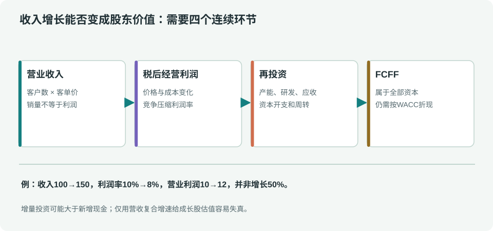
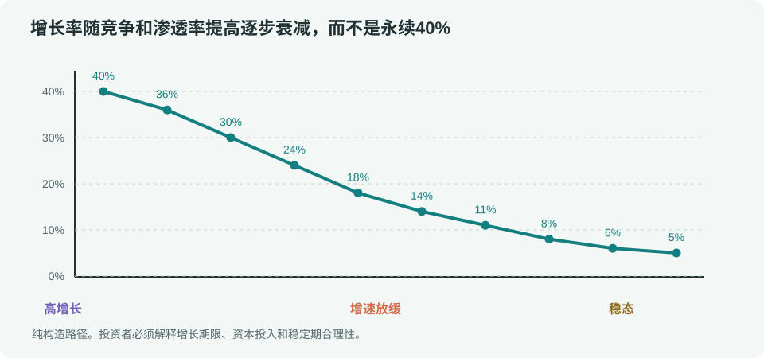
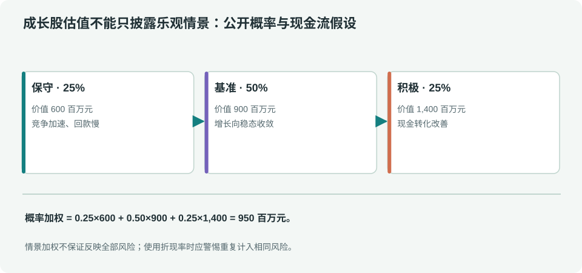

CHAPTER 11 · GROWTH EQUITY VALUATION
成长股估值：增长、现金与稀释
收入增速只是故事的开头，股东拿到的现金与股权比例才是价值判断的终点。
营业收入增长40%，为什么股东仍可能没有得到现金？
产品需求火热的公司可能同时建设产能、预付原料、扩充库存并增加研发支出。收入增长快于现金流，甚至经营利润为正而自由现金流为负，并不矛盾。成长股估值的对象不是一个增长率，而是增长经过成本、再投资和融资后的可归属现金。
研究需要回答四个问题：市场能容纳多少产品？售价与成本怎样变化？增长需要占用多少资本？新股发行之后旧股东最终分得多少？

从规模增长到增量资本回报
收入增长可由客户数、消费频率、每客消费额和产品组合推动，但增长不能脱离竞争。短期规模效应可能降低单位固定成本，反过来价格战、获客成本与售后服务也可能压低毛利率。
财务预测可将收入拆为数量×平均售价，再扣直接成本与营业费用得到EBIT。税后经营利润仍然不等于FCFF：净资本开支与非现金营运资本增加会消耗现金。增长创造经济价值还需要增量投入资本回报长期覆盖资本成本。
| 驱动 | 可验证证据 | 失败条件 |
|---|---|---|
| 客户与需求 | 活跃付费用户、订单、流失 | 客户扩大但续费率降低 |
| 定价与毛利 | 合同价、折扣、单位成本 | 降价吃掉销量增长 |
| 新增资本 | CapEx、存货、应收 | 每1元增长需追加过多资本 |
| 每股价值 | 稀释股数、可转债和期权 | 融资扩张稀释了旧股东 |
高增长不能直接假设永续
对仍在快速渗透的业务，应分为高增长、减速过渡与稳态。即使新技术有可能创造第二增长曲线，也需要独立估计市场规模、技术成功率及融资负担；不能因为一种未来可能性就把40%的收入增长率代入无限年数。

稳态增长需要符合再投资效率和长期竞争情况：如果企业想用增长率g持续增长，必须有与此对应的利润、再投资及ROIC组合。WACC与g若非常接近，永续终值会极其敏感。
三年FCFF模型的完整构造算例
假定初始收入100百万元，接下来3年收入每年增长20%，EBIT利润率20%，税率25%，净资本投入与非现金营运资本增加合计占收入4%。FCFF占收入的比率为20%×(1−25%)−4%=11%。前3年收入分别120、144、172.8，FCFF分别13.2、15.84、19.008百万元。
若WACC=10%，第3年后FCFF永久按3%增长，三年显式期现值39.37，终值现值210.13，EV合计249.51百万元；折现后终值占约84.2%。如此高的终值权重是在提醒研究者重审稳定期假设，而非展示模型精度。FCFF得到的是经营企业价值；转成每股股权价值仍需调整债务、非经营资产及稀释股数。
融资、股权稀释与旧股东索取权
一家企业原有股权价值1000百万元和100百万股，等于每股10元。融资时若新发行50百万股，不能将融资后企业估值增长全部视为旧股东收益。须核对发行价格、新资金和可转债条款、员工股权激励以及新投资是否具有正净现值。
评估早期科技项目时，技术能否成功、成功后市场回报、失败前现金耗尽概率、追加融资金额和股本稀释都是独立问题。即使项目成功的企业价值很大，旧股东仍可能在连续融资中被稀释。
对不确定性做情景分析，而非抬高所有假设
假设三种构造的股权价值：保守600、基准900、积极1400百万元；主观概率分别25%、50%、25%，得到加权期望950百万元。这个数字只是把可能路径与假设显式列出来，不代表真实价格分布。

关键风险往往联合发生：收入减速时毛利率下降、营运资本恶化、融资难度上升。独立提高风险折现率后又在每个情景重复扣减同一融资风险，可能造成双重计量；应说明概率和贴现率如何分工。
PEGR与R–IRR：研究框架的可检验性
原稿将PEGR、IRR与R曲线相交描述成已经推翻永续DCF的革命性理论，这种表达不准确。PEGR和所谓有效预测期是特定作者提出的成长股分析框架，存在具体变量与假设，并非CFA估值教材所采用的通用公理。
一方面，多阶段DCF并不要求所有未来年份使用同一个折现率，研究者可以设置增长收敛、不同期限风险、不同贴现率及退出情景；另一方面，任何新模型也必须交代现金流/盈利口径、融资要求、适用样本、样本外误差和与既有方法的比较。尤其不能把固定12年期限、历史回撤百分比或数学交点未经独立复验就写为普适定律。
原作者的介绍可见上海金融与发展实验室 PEGR 方法论文章。把它作为可进一步研究的观点比作为保证收益的结论更严谨。
能够独立复算的研究检查
练习
- 收入增长50%而利润率从10%降到8%，营业利润为何只由10增长到12？
- 为什么构造DCF的84.2%终值比重需要额外的稳态敏感性实验？
- 新增融资和可转换股权怎样影响每股估值？
- 什么样的样本外证据可以支持或否定一个PEGR模型的有效性？
资料与定义边界
- CFA Institute 2026 多阶段FCFF/FCFE估值
- CFA Institute 2026 Equity Valuation Tools
- CFA Institute 2026 Market-Based Valuation
- 上海金融与发展实验室：PEGR/R-IRR作者论述
图表、财务数字均为人工构造；收益和增长不是预测。